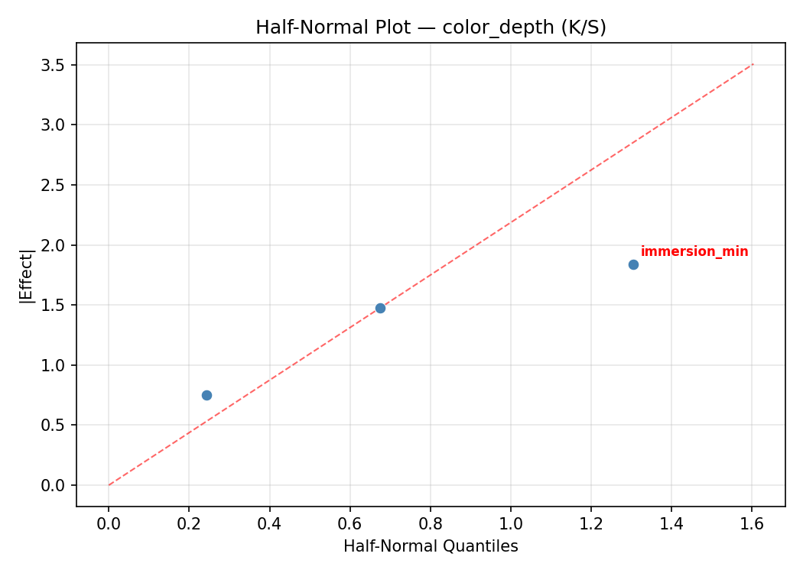
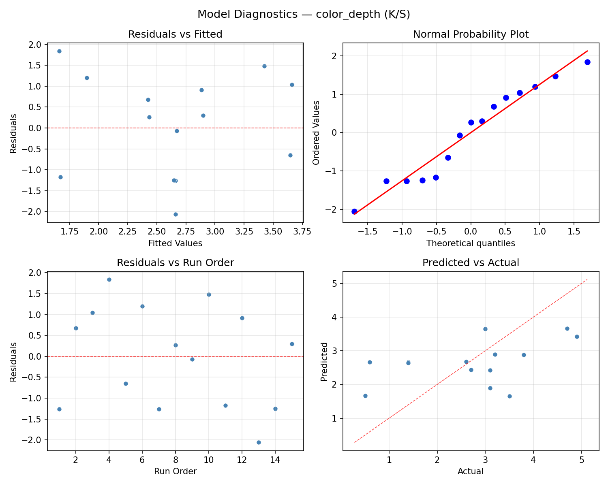
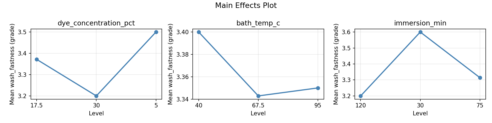
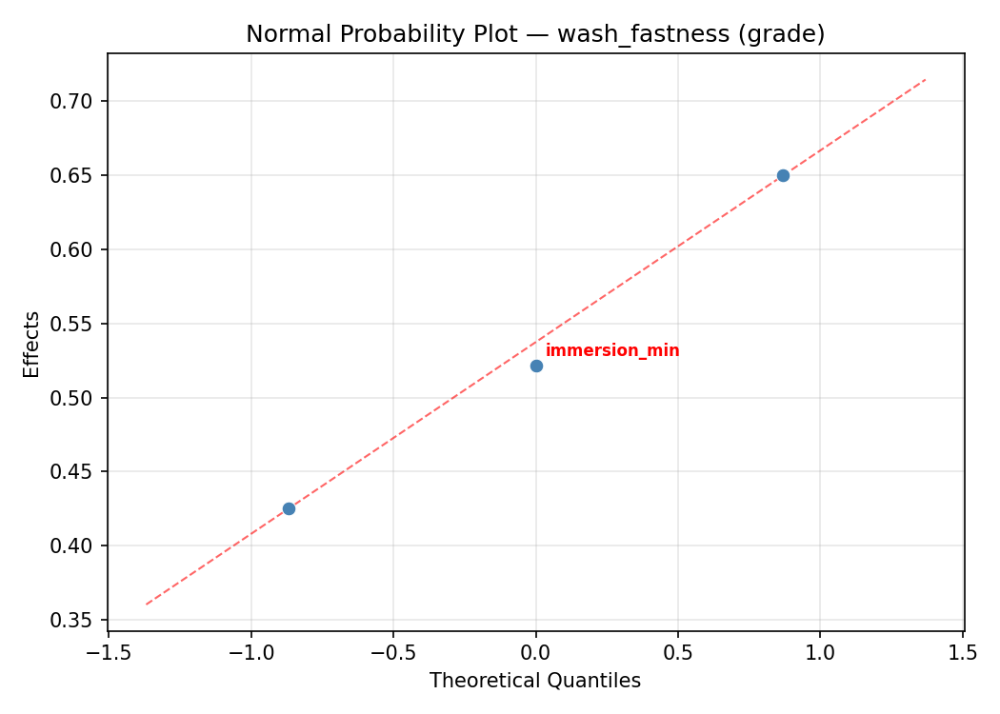
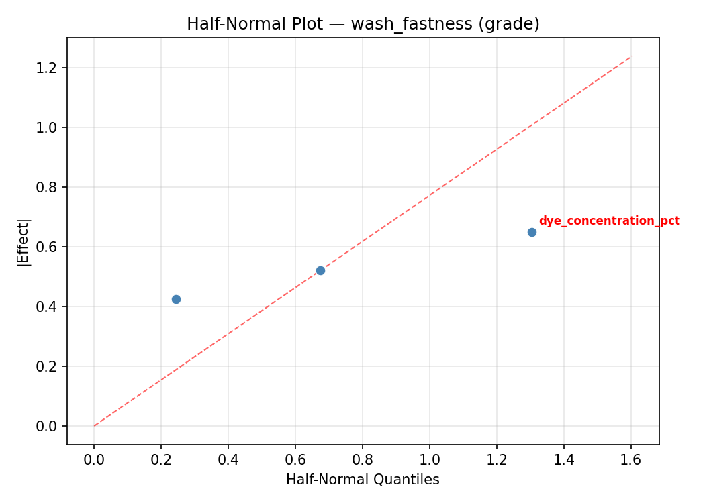
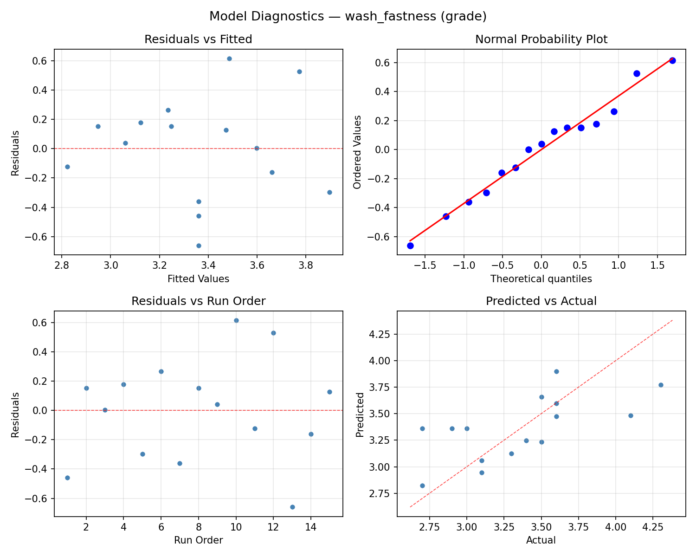
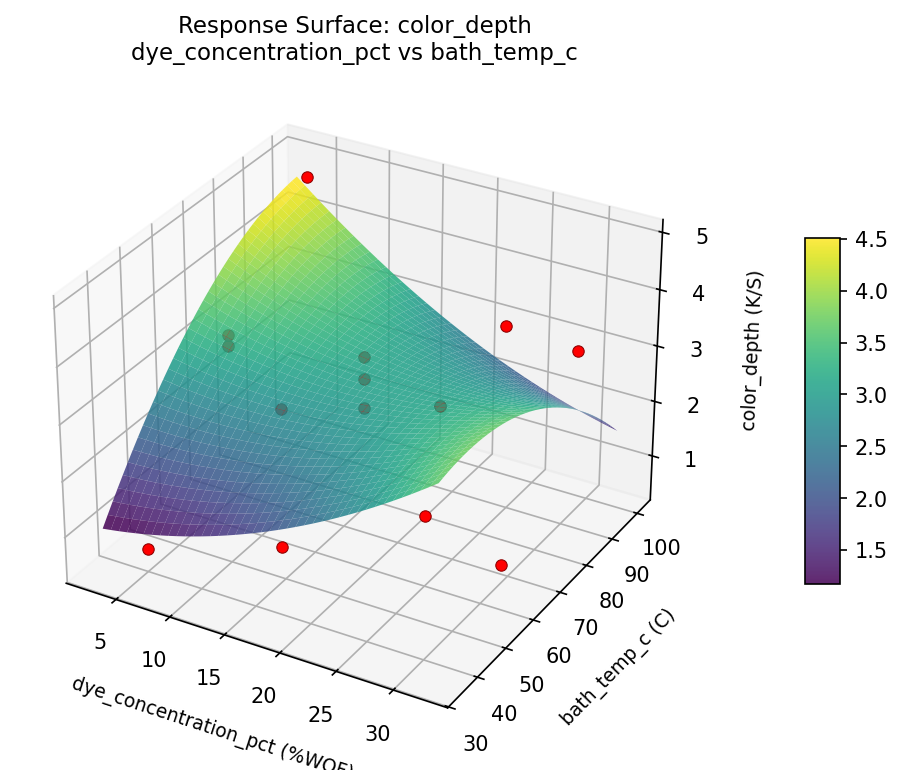

Summary
This experiment investigates natural fabric dyeing. Box-Behnken design to maximize color depth and wash fastness by tuning dye concentration, bath temperature, and immersion time.
The design varies 3 factors: dye concentration pct (%WOF), ranging from 5 to 30, bath temp c (C), ranging from 40 to 95, and immersion min (min), ranging from 30 to 120. The goal is to optimize 2 responses: color depth (K/S) (maximize) and wash fastness (grade) (maximize). Fixed conditions held constant across all runs include fabric = cotton_muslin, mordant = alum.
A Box-Behnken design was chosen because it efficiently fits quadratic models with 3 continuous factors while avoiding extreme corner combinations — requiring only 15 runs instead of the 8 needed for a full factorial at two levels.
Quadratic response surface models were fitted to capture potential curvature and factor interactions. The RSM contour plots below visualize how pairs of factors jointly affect each response.
Key Findings
For color depth, the most influential factors were dye concentration pct (49.2%), bath temp c (35.0%), immersion min (15.8%). The best observed value was 4.9 (at dye concentration pct = 30, bath temp c = 67.5, immersion min = 30).
For wash fastness, the most influential factors were dye concentration pct (60.1%), bath temp c (26.1%), immersion min (13.7%). The best observed value was 4.3 (at dye concentration pct = 5, bath temp c = 67.5, immersion min = 30).
Recommended Next Steps
- Run confirmation experiments at the predicted optimal settings to validate the model.
- Consider whether any fixed factors should be varied in a future study.
Experimental Setup
Factors
| Factor | Low | High | Unit |
|---|
dye_concentration_pct | 5 | 30 | %WOF |
bath_temp_c | 40 | 95 | C |
immersion_min | 30 | 120 | min |
Fixed: fabric = cotton_muslin, mordant = alum
Responses
| Response | Direction | Unit |
|---|
color_depth | ↑ maximize | K/S |
wash_fastness | ↑ maximize | grade |
Configuration
{
"metadata": {
"name": "Natural Fabric Dyeing",
"description": "Box-Behnken design to maximize color depth and wash fastness by tuning dye concentration, bath temperature, and immersion time"
},
"factors": [
{
"name": "dye_concentration_pct",
"levels": [
"5",
"30"
],
"type": "continuous",
"unit": "%WOF"
},
{
"name": "bath_temp_c",
"levels": [
"40",
"95"
],
"type": "continuous",
"unit": "C"
},
{
"name": "immersion_min",
"levels": [
"30",
"120"
],
"type": "continuous",
"unit": "min"
}
],
"fixed_factors": {
"fabric": "cotton_muslin",
"mordant": "alum"
},
"responses": [
{
"name": "color_depth",
"optimize": "maximize",
"unit": "K/S"
},
{
"name": "wash_fastness",
"optimize": "maximize",
"unit": "grade"
}
],
"settings": {
"operation": "box_behnken",
"test_script": "use_cases/177_fabric_dyeing/sim.sh"
}
}
Experimental Matrix
The Box-Behnken Design produces 15 runs. Each row is one experiment with specific factor settings.
| Run | dye_concentration_pct | bath_temp_c | immersion_min |
|---|
| 1 | 17.5 | 40 | 30 |
| 2 | 17.5 | 67.5 | 75 |
| 3 | 30 | 67.5 | 120 |
| 4 | 30 | 67.5 | 30 |
| 5 | 17.5 | 67.5 | 75 |
| 6 | 17.5 | 67.5 | 75 |
| 7 | 5 | 67.5 | 120 |
| 8 | 30 | 40 | 75 |
| 9 | 17.5 | 40 | 120 |
| 10 | 30 | 95 | 75 |
| 11 | 5 | 67.5 | 30 |
| 12 | 17.5 | 95 | 120 |
| 13 | 5 | 40 | 75 |
| 14 | 5 | 95 | 75 |
| 15 | 17.5 | 95 | 30 |
Step-by-Step Workflow
1
Preview the design
$ doe info --config use_cases/177_fabric_dyeing/config.json
2
Generate the runner script
$ doe generate --config use_cases/177_fabric_dyeing/config.json \
--output use_cases/177_fabric_dyeing/results/run.sh --seed 42
3
Execute the experiments
$ bash use_cases/177_fabric_dyeing/results/run.sh
4
Analyze results
$ doe analyze --config use_cases/177_fabric_dyeing/config.json
5
Get optimization recommendations
$ doe optimize --config use_cases/177_fabric_dyeing/config.json
6
Multi-objective optimization
With 2 competing responses, use --multi to find the best compromise via Derringer–Suich desirability.
$ doe optimize --config use_cases/177_fabric_dyeing/config.json --multi
7
Generate the HTML report
$ doe report --config use_cases/177_fabric_dyeing/config.json \
--output use_cases/177_fabric_dyeing/results/report.html
Features Exercised
| Feature | Value |
|---|
| Design type | box_behnken |
| Factor types | continuous (all 3) |
| Arg style | double-dash |
| Responses | 2 (color_depth ↑, wash_fastness ↑) |
| Total runs | 15 |
Analysis Results
Generated from actual experiment runs using the DOE Helper Tool.
Response: color_depth
Top factors: dye_concentration_pct (49.2%), bath_temp_c (35.0%), immersion_min (15.8%).
ANOVA
| Source | DF | SS | MS | F | p-value |
|---|
| Source | DF | SS | MS | F | p-value |
| dye_concentration_pct | 2 | 9.9924 | 4.9962 | 23.420 | 0.0005 |
| bath_temp_c | 2 | 4.2142 | 2.1071 | 9.877 | 0.0069 |
| immersion_min | 2 | 0.9142 | 0.4571 | 2.143 | 0.1798 |
| Lack | of | Fit | 6 | 10.1085 | 1.6847 |
| Pure | Error | 2 | 0.4267 | | |
| Error | 8 | 10.5351 | 0.2133 | | |
| Total | 14 | 25.6560 | 1.8326 | | |
Pareto Chart

Main Effects Plot

Normal Probability Plot of Effects

Half-Normal Plot of Effects

Model Diagnostics

Response: wash_fastness
Top factors: dye_concentration_pct (60.1%), bath_temp_c (26.1%), immersion_min (13.7%).
ANOVA
| Source | DF | SS | MS | F | p-value |
|---|
| Source | DF | SS | MS | F | p-value |
| dye_concentration_pct | 2 | 1.3514 | 0.6757 | 28.958 | 0.0002 |
| bath_temp_c | 2 | 0.2799 | 0.1400 | 5.998 | 0.0256 |
| immersion_min | 2 | 0.0660 | 0.0330 | 1.414 | 0.2979 |
| Lack | of | Fit | 6 | 1.2520 | 0.2087 |
| Pure | Error | 2 | 0.0467 | | |
| Error | 8 | 1.2987 | 0.0233 | | |
| Total | 14 | 2.9960 | 0.2140 | | |
Pareto Chart

Main Effects Plot

Normal Probability Plot of Effects

Half-Normal Plot of Effects

Model Diagnostics

Response Surface Plots
3D surfaces fitted with quadratic RSM. Red dots are observed data points.
color depth bath temp c vs immersion min

color depth dye concentration pct vs bath temp c

color depth dye concentration pct vs immersion min

wash fastness bath temp c vs immersion min

wash fastness dye concentration pct vs bath temp c

wash fastness dye concentration pct vs immersion min

Multi-Objective Optimization
When responses compete, Derringer–Suich desirability finds the best compromise.
Each response is scaled to a 0–1 desirability, then combined via a weighted geometric mean.
Overall Desirability
D = 0.8846
Per-Response Desirability
| Response | Weight | Desirability | Predicted | Dir |
|---|
color_depth |
1.0 |
|
4.90 0.9545 4.90 K/S |
↑ |
wash_fastness |
1.5 |
|
4.10 0.8409 4.10 grade |
↑ |
Recommended Settings
| Factor | Value |
|---|
dye_concentration_pct | 17.5 %WOF |
bath_temp_c | 95 C |
immersion_min | 120 min |
Source: from observed run #10
Trade-off Summary
Sacrifice = how much worse than single-objective best.
| Response | Predicted | Best Observed | Sacrifice |
|---|
wash_fastness | 4.10 | 4.30 | +0.20 |
Top 3 Runs by Desirability
| Run | D | Factor Settings |
|---|
| #12 | 0.8562 | dye_concentration_pct=5, bath_temp_c=95, immersion_min=75 |
| #3 | 0.6787 | dye_concentration_pct=17.5, bath_temp_c=67.5, immersion_min=75 |
Model Quality
| Response | R² | Type |
|---|
wash_fastness | 0.7430 | quadratic |
Full Multi-Objective Output
============================================================
MULTI-OBJECTIVE OPTIMIZATION
Method: Derringer-Suich Desirability Function
============================================================
Overall desirability: D = 0.8846
Response Weight Desirability Predicted Direction
---------------------------------------------------------------------
color_depth 1.0 0.9545 4.90 K/S ↑
wash_fastness 1.5 0.8409 4.10 grade ↑
Recommended settings:
dye_concentration_pct = 17.5 %WOF
bath_temp_c = 95 C
immersion_min = 120 min
(from observed run #10)
Trade-off summary:
color_depth: 4.90 (best observed: 4.90, sacrifice: +0.00)
wash_fastness: 4.10 (best observed: 4.30, sacrifice: +0.20)
Model quality:
color_depth: R² = 0.8060 (quadratic)
wash_fastness: R² = 0.7430 (quadratic)
Top 3 observed runs by overall desirability:
1. Run #10 (D=0.8846): dye_concentration_pct=17.5, bath_temp_c=95, immersion_min=120
2. Run #12 (D=0.8562): dye_concentration_pct=5, bath_temp_c=95, immersion_min=75
3. Run #3 (D=0.6787): dye_concentration_pct=17.5, bath_temp_c=67.5, immersion_min=75
Full Analysis Output
=== Main Effects: color_depth ===
Factor Effect Std Error % Contribution
--------------------------------------------------------------
dye_concentration_pct 1.8607 0.3495 49.2%
bath_temp_c 1.3250 0.3495 35.0%
immersion_min 0.5964 0.3495 15.8%
=== ANOVA Table: color_depth ===
Source DF SS MS F p-value
-----------------------------------------------------------------------------
dye_concentration_pct 2 9.9924 4.9962 23.420 0.0005
bath_temp_c 2 4.2142 2.1071 9.877 0.0069
immersion_min 2 0.9142 0.4571 2.143 0.1798
Lack of Fit 6 10.1085 1.6847 7.897 0.1166
Pure Error 2 0.4267 0.2133
Error 8 10.5351 0.2133
Total 14 25.6560 1.8326
=== Summary Statistics: color_depth ===
dye_concentration_pct:
Level N Mean Std Min Max
------------------------------------------------------------
17.5 7 1.8143 1.1157 0.5000 3.1000
30 4 3.1250 1.4315 1.4000 4.9000
5 4 3.6750 0.8261 2.7000 4.7000
bath_temp_c:
Level N Mean Std Min Max
------------------------------------------------------------
40 4 2.2000 1.5166 0.5000 3.8000
67.5 7 2.4286 1.3913 0.6000 4.7000
95 4 3.5250 0.9878 2.6000 4.9000
immersion_min:
Level N Mean Std Min Max
------------------------------------------------------------
120 4 3.0250 0.2217 2.7000 3.2000
30 4 2.7000 1.7263 0.5000 4.7000
75 7 2.4286 1.6153 0.6000 4.9000
=== Main Effects: wash_fastness ===
Factor Effect Std Error % Contribution
--------------------------------------------------------------
dye_concentration_pct 0.6571 0.1194 60.1%
bath_temp_c 0.2857 0.1194 26.1%
immersion_min 0.1500 0.1194 13.7%
=== ANOVA Table: wash_fastness ===
Source DF SS MS F p-value
-----------------------------------------------------------------------------
dye_concentration_pct 2 1.3514 0.6757 28.958 0.0002
bath_temp_c 2 0.2799 0.1400 5.998 0.0256
immersion_min 2 0.0660 0.0330 1.414 0.2979
Lack of Fit 6 1.2520 0.2087 8.943 0.1040
Pure Error 2 0.0467 0.0233
Error 8 1.2987 0.0233
Total 14 2.9960 0.2140
=== Summary Statistics: wash_fastness ===
dye_concentration_pct:
Level N Mean Std Min Max
------------------------------------------------------------
17.5 7 3.0429 0.3155 2.7000 3.5000
30 4 3.7000 0.2708 3.5000 4.1000
5 4 3.5750 0.5252 3.1000 4.3000
bath_temp_c:
Level N Mean Std Min Max
------------------------------------------------------------
40 4 3.4750 0.6551 2.7000 4.3000
67.5 7 3.2143 0.3805 2.7000 3.6000
95 4 3.5000 0.4320 3.1000 4.1000
immersion_min:
Level N Mean Std Min Max
------------------------------------------------------------
120 4 3.4000 0.2160 3.1000 3.6000
30 4 3.2500 0.4359 2.7000 3.6000
75 7 3.4000 0.6083 2.7000 4.3000
Optimization Recommendations
=== Optimization: color_depth ===
Direction: maximize
Best observed run: #10
dye_concentration_pct = 30
bath_temp_c = 67.5
immersion_min = 30
Value: 4.9
RSM Model (linear, R² = 0.1692, Adj R² = -0.0574):
Coefficients:
intercept +2.6600
dye_concentration_pct +0.4000
bath_temp_c +0.1500
immersion_min -0.6000
RSM Model (quadratic, R² = 0.8308, Adj R² = 0.5263):
Coefficients:
intercept +2.1000
dye_concentration_pct +0.4000
bath_temp_c +0.1500
immersion_min -0.6000
dye_concentration_pct*bath_temp_c +0.6000
dye_concentration_pct*immersion_min -0.3500
bath_temp_c*immersion_min -0.9500
dye_concentration_pct^2 +0.2000
bath_temp_c^2 -0.7000
immersion_min^2 +1.5500
Curvature analysis:
immersion_min coef=+1.5500 convex (has a minimum)
bath_temp_c coef=-0.7000 concave (has a maximum)
dye_concentration_pct coef=+0.2000 convex (has a minimum)
Notable interactions:
bath_temp_c*immersion_min coef=-0.9500 (antagonistic)
dye_concentration_pct*bath_temp_c coef=+0.6000 (synergistic)
dye_concentration_pct*immersion_min coef=-0.3500 (antagonistic)
Predicted optimum (from quadratic model, at observed points):
dye_concentration_pct = 30
bath_temp_c = 67.5
immersion_min = 30
Predicted value: 5.2000
Surface optimum (via L-BFGS-B, quadratic model):
dye_concentration_pct = 30
bath_temp_c = 95
immersion_min = 30
Predicted value: 6.2000
Model quality: Good fit — general trends are captured, some noise remains.
Factor importance:
1. immersion_min (effect: 2.2, contribution: 55.2%)
2. bath_temp_c (effect: 1.0, contribution: 24.6%)
3. dye_concentration_pct (effect: 0.8, contribution: 20.2%)
=== Optimization: wash_fastness ===
Direction: maximize
Best observed run: #12
dye_concentration_pct = 5
bath_temp_c = 67.5
immersion_min = 30
Value: 4.3
RSM Model (linear, R² = 0.1444, Adj R² = -0.0890):
Coefficients:
intercept +3.3600
dye_concentration_pct +0.1375
bath_temp_c +0.1125
immersion_min -0.1500
RSM Model (quadratic, R² = 0.7483, Adj R² = 0.2952):
Coefficients:
intercept +3.0667
dye_concentration_pct +0.1375
bath_temp_c +0.1125
immersion_min -0.1500
dye_concentration_pct*bath_temp_c +0.2000
dye_concentration_pct*immersion_min +0.1250
bath_temp_c*immersion_min -0.1250
dye_concentration_pct^2 +0.1917
bath_temp_c^2 -0.2083
immersion_min^2 +0.5667
Curvature analysis:
immersion_min coef=+0.5667 convex (has a minimum)
bath_temp_c coef=-0.2083 concave (has a maximum)
dye_concentration_pct coef=+0.1917 convex (has a minimum)
Predicted optimum (from quadratic model, at observed points):
dye_concentration_pct = 30
bath_temp_c = 67.5
immersion_min = 30
Predicted value: 3.9875
Surface optimum (via L-BFGS-B, quadratic model):
dye_concentration_pct = 30
bath_temp_c = 95
immersion_min = 30
Predicted value: 4.2167
Model quality: Good fit — general trends are captured, some noise remains.
Factor importance:
1. immersion_min (effect: 0.7, contribution: 51.4%)
2. bath_temp_c (effect: 0.4, contribution: 26.9%)
3. dye_concentration_pct (effect: 0.3, contribution: 21.7%)